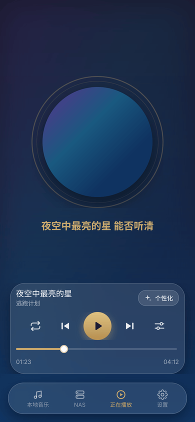
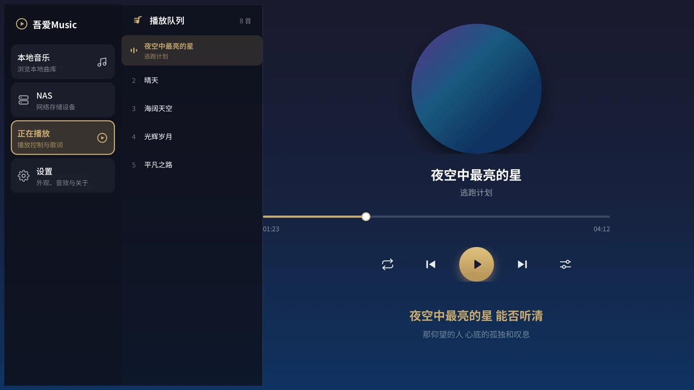
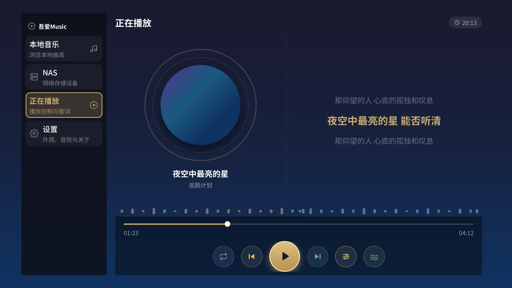
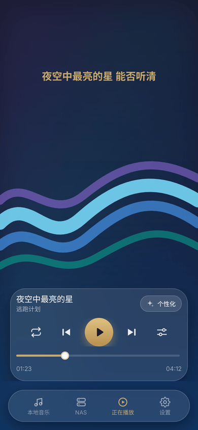
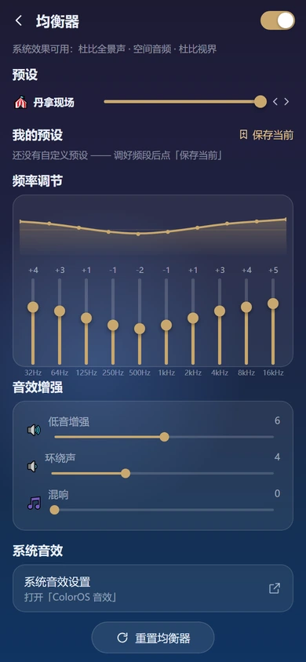

本地无损播放
原生解码 FLAC / WAV / MP3 / M4A 等主流格式，完整保留动态与细节，离线也能享受高保真。
不靠云端曲库，只把你的本地收藏打磨到极致。
原生解码 FLAC / WAV / MP3 / M4A 等主流格式，完整保留动态与细节，离线也能享受高保真。
桌面歌词、锁屏歌词与流体云歌词联动，双语对照、逐字滚动，让每句词都恰到好处。
10 段参量均衡 + 预设与自定义，按耳机与曲目个性调音，重低音或清亮人声随手切换。
14 套精心调配的配色与背景笔法，明/暗一体适配，界面随你的审美焕然一新。
频谱随节拍跃动，把声音变成看得见的画面，沉浸感拉满。
自动平衡专辑间响度差异，告别切歌忽大忽小，连续播放更顺耳。
补全标签、封面与歌词，批量重命名整理曲库，让收藏井井有条。
启动自动静默检查版本，下载后校验安装一体化，始终用上最新体验。
液态玻璃界面随主题配色焕新，手机、车机、电视共用一套设计语言。先看三端的「正在播放」，再看可视化与均衡器。



播放页不只是封面和进度条：四款可视化风格随频谱实时律动，均衡器里可以调出真正属于自己的声音。


同一份设计语言，为不同屏幕量身打造。点击即可下载对应安装包。
随身聆听，单手操控。完整功能浓缩于掌心，通勤路上随时切歌。
横屏大视野，车机与平板同一构建。触控目标放大、布局分栏，驾驶或休闲都得心应手。
客厅里的音乐中心。遥控器方向键操作，超大焦点与字号，沙发上轻松选曲。
每个平台提供两个下载入口：国内下载走码云（Gitee）镜像，国际下载走 GitHub Releases，两条链路同版本、任选其一即可。站点由 Cloudflare Pages 托管，下载后由客户端校验安装包完整性。车机与平板为同一安装包；若拆分架构分发，下方会列出对应的独立包。
下方版本信息实时读取服务器清单，与客户端 OTA 共用同一数据源。
暂无更新记录。
无需应用商店，应用自己就能检查、下载并安装新版本。
应用启动时自动向服务器查询版本，不打扰你的聆听。
发现新版本弹出更新说明，可选立即升级或稍后处理。
下载至应用私有目录，完成后以 SHA-256 校验，防止文件被篡改。
通过系统安装器完成覆盖安装，签名一致即可无缝升级。
强制更新机制：当你的版本低于最低基线时，必须更新才能继续使用，确保老版本不会因接口变更而无法工作。
本站已下载 0 次